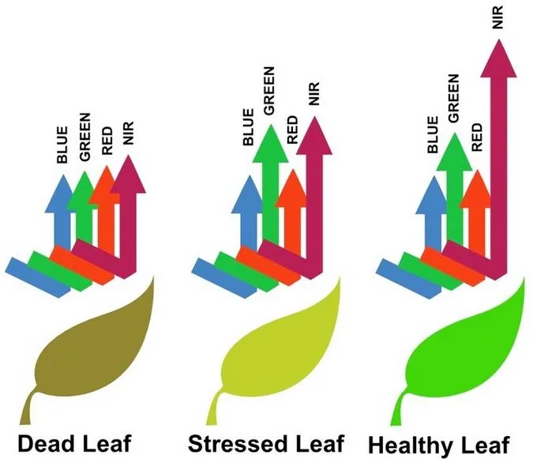
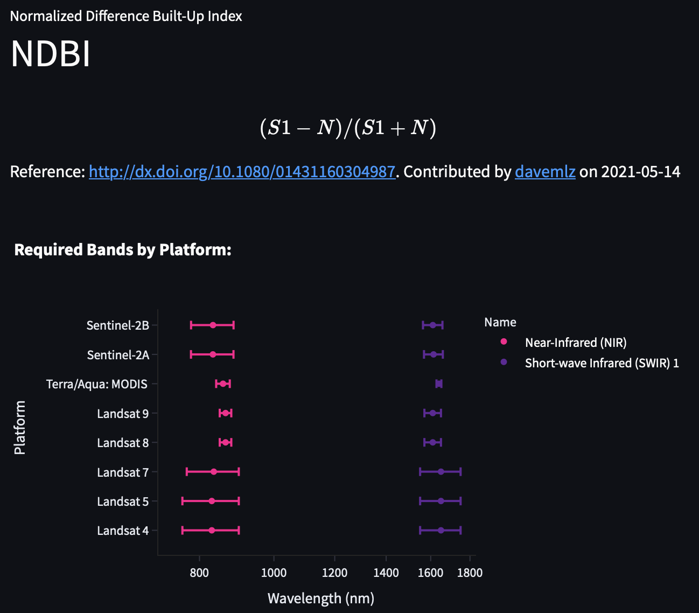
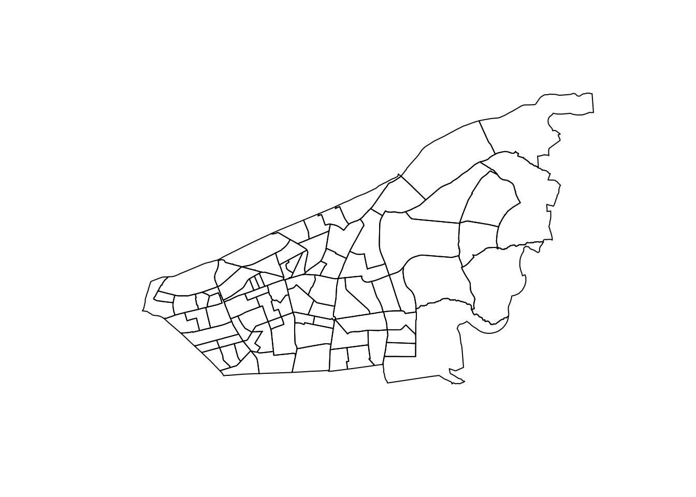
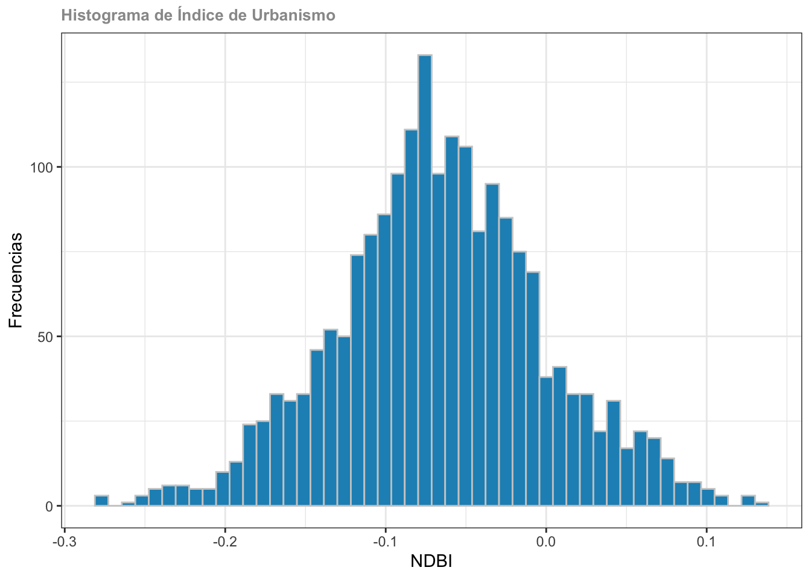
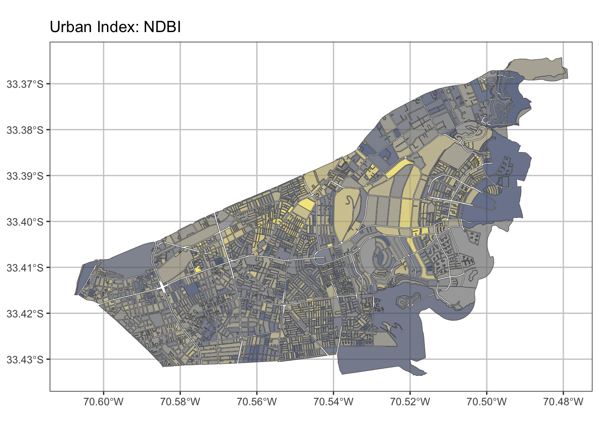
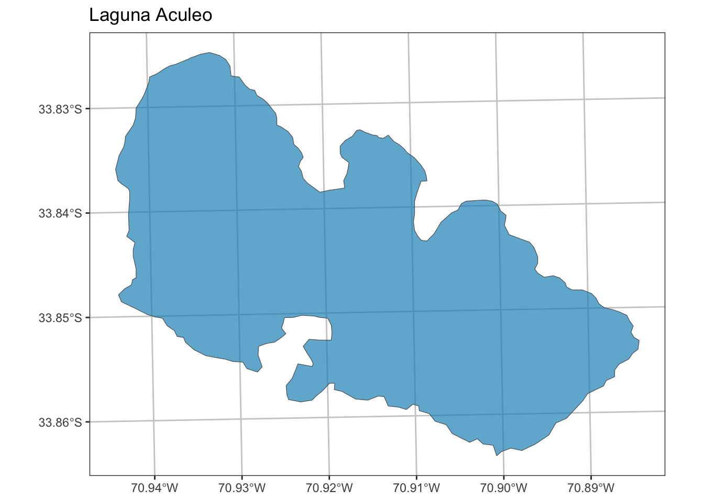

library(sf)
library(rgee)
ee_Initialize('denis.berroeta@gmail.com', drive = TRUE)7 S5: Índices Espectrales
Índices Espectrales con R y Rgee
7.1 Introducción
Los índices espectrales son herramientas utilizadas en percepción remota para analizar la reflectancia de la superficie terrestre en diferentes longitudes de onda del espectro electromagnético. Estos índices se basan en la relación entre la reflectancia en dos o más bandas espectrales y se utilizan para medir diferentes propiedades de la vegetación, como la salud, la humedad y la densidad.
La más común formula matemática de diferencia normalizada es la siguiente:
\frac{(B_x-B_y)}{(B_x+B_y)} En términos prácticos, se trata de la diferencia entre dos bandas seleccionadas normalizada por su suma. Este tipo de cálculo es muy útil para minimizar (en la medida de lo posible) los efectos de la iluminación (sombras en regiones montañosas, sombras de nubes, etc.) y mejorar las características espectrales que inicialmente no son visibles.

Algunos de los índices espectrales más utilizados son:
- NDVI (Índice de Vegetación de Diferencia Normalizada): Este índice se utiliza para medir la salud y densidad de la vegetación. Se calcula utilizando la reflectancia en la banda roja y la banda infrarroja cercana. Un valor alto de NDVI indica una vegetación densa y saludable (Figure 7.1).
- EVI (Índice de Vegetación Mejorado): Este índice también se utiliza para medir la salud y densidad de la vegetación, pero tiene en cuenta factores como la influencia del suelo y la atmósfera. Se calcula utilizando la reflectancia en la banda azul, roja e infrarroja cercana.
- SAVI (Índice de Vegetación Ajustado para Suelo): Este índice se utiliza para reducir la influencia del suelo en la medición de la vegetación. Se calcula utilizando la reflectancia en la banda roja y la infrarroja cercana y tiene en cuenta la cantidad de luz reflejada por el suelo.
- NLI (Índice de Línea de Agua Normalizado): Este índice se utiliza para medir la cantidad de agua en una superficie. Se calcula utilizando la reflectancia en la banda verde y la banda infrarroja cercana.
- NDWI (Índice de Agua Normalizado): Este índice también se utiliza para medir la cantidad de agua en una superficie, pero tiene en cuenta la reflectancia en la banda del infrarrojo de onda corta y la banda verde.
Estos índices espectrales son solo algunos ejemplos de las muchas herramientas disponibles para analizar la vegetación y el agua utilizando percepción remota.
7.2 Índices Urbanos
Algunos ejemplos de índices espectrales normalizados utilizados para analizar el entorno urbano con percepción remota son:
- NDBI (Índice de Brillo de la Edificación Normalizado): Este índice se utiliza para identificar y mapear áreas urbanas construidas. Se calcula utilizando la reflectancia en la banda del infrarrojo cercano y la banda del rojo.
- SI (Índice de Suelo): Este índice se utiliza para detectar y mapear la presencia de suelo desnudo en áreas urbanas. Se calcula utilizando la reflectancia en la banda del rojo y la banda del infrarrojo cercano.
Estos índices espectrales normalizados pueden ser útiles para el análisis de la planificación urbana, la gestión del medio ambiente y otros fines relacionados con la ciudad.
Haciendo uso de proyecto awesome spectral indices que ofrece a los usuarios las herramientas para consultar índices espectrales y las bandas requeridas para el cálculo de un índice. Incluso cuentan con Aplicación web
7.3 Calculo de Índices de Urbanos
Cargar Librerías
library(tidyverse)
library(ggplot2)
library(viridis)
library(mapview)Si seleccionamos los índices espectrales obtendremos la siguiente lista
Seleccionares índices espectrales urbanos (comparaciones de indices urbanos) y escogeremos el NDBI (Normalized Difference Built-Up Index).

7.3.1 Selección de Área de Estudio
mi_comuna <- "LAS CONDES"
roi <- readRDS("data/rds/zonas_urb_consolidadas.rds") %>%
st_as_sf() %>%
filter( NOM_COMUNA == mi_comuna) %>%
st_transform(4326)
plot(roi$geometry)
roi_ee <- roi%>%
st_union() %>%
st_geometry() %>%
sf_as_ee()7.3.2 Selección Imagen Satelital
Para el siguiente análisis usaremos el un producto satelital de Sentinel Collections, denominado Harmonized Sentinel-2 MSI: MultiSpectral Instrument, Level-1C
maskS2clouds <- function(image) {
qa <- image$select("QA60")
# Bits 10 and 11 are clouds and cirrus, respectively.
cloudBitMask <- bitwShiftL(1, 10)
cirrusBitMask <- bitwShiftL(1, 11)
# Both flags should be set to zero, indicating clear conditions.
mask <- qa$bitwiseAnd(cloudBitMask)$eq(0)$And(
qa$bitwiseAnd(cirrusBitMask)$eq(0)
)
# Return the masked and scaled data, without the QA bands.
image$updateMask(mask)$
divide(10000)$
select("B.*")$
copyProperties(image, list("system:time_start"))
}# Map the function over one year of data and take the median.
# Load Sentinel-2 TOA reflectance data.
S2 <- ee$ImageCollection("COPERNICUS/S2_HARMONIZED")$
filterDate("2016-01-01", "2016-12-31")$
filter(ee$Filter$lt("CLOUDY_PIXEL_PERCENTAGE", 20))$
map(maskS2clouds)$
median()$
clip(roi_ee)viz <- list(bands = c("B4", "B3", "B2"), min = 0, max = 0.3)
Map$centerObject(eeObject = S2,zoom = 12)
Map$addLayer(S2, viz, "RGB")7.3.3 Aplicar Índice
la función NDBI corresponde a la siguiente:
NDBI = \frac{S1-N}{S1+N} Por lo anterior es muy importante conocer los nombres de la bandas para crear correctamente la función, a continuación de exponen las bandas del producto satelital Sentinel. Buscar información de productos satelitales en Earth Engine Data Catalog de donde se obtuvo la siguiente Table 7.1 para el caso de Sentinel 2.
| Name | Pixel.Size | Wavelength | Description |
|---|---|---|---|
| B1 | 60 meters | 443.9nm (S2A) / 442.3nm (S2B) | Aerosols |
| B2 | 10 meters | 496.6nm (S2A) / 492.1nm (S2B) | Blue |
| B3 | 10 meters | 560nm (S2A) / 559nm (S2B) | Green |
| B4 | 10 meters | 664.5nm (S2A) / 665nm (S2B) | Red |
| B5 | 20 meters | 703.9nm (S2A) / 703.8nm (S2B) | Red Edge 1 |
| B6 | 20 meters | 740.2nm (S2A) / 739.1nm (S2B) | Red Edge 2 |
| B7 | 20 meters | 782.5nm (S2A) / 779.7nm (S2B) | Red Edge 3 |
| B8 | 10 meters | 835.1nm (S2A) / 833nm (S2B) | NIR |
| B8A | 20 meters | 864.8nm (S2A) / 864nm (S2B) | Red Edge 4 |
| B9 | 60 meters | 945nm (S2A) / 943.2nm (S2B) | Water vapor |
| B11 | 20 meters | 1613.7nm (S2A) / 1610.4nm (S2B) | SWIR 1 |
| B12 | 20 meters | 2202.4nm (S2A) / 2185.7nm (S2B) | SWIR 2 |
F_NDBI<- function (image){
ndbi<-image$expression('float(S1-N)/float(S1+N)',
opt_map=list("N"=image$select("B8"),
"S1"=image$select("B11")))$
rename("NDBI")
return(ndbi)
}S2_NDBI <- F_NDBI(S2)7.3.4 Visualizar Resultados
pal_ndbi <- c('white' , 'white', 'white', 'red' , 'red', 'red')
viz_ndbi<- list(min=-1,
max=1,
palette=pal_ndbi)
Map$centerObject(eeObject = roi_ee,zoom = 12)
Map$addLayer(S2_NDBI,visParams =viz_ndbi)7.3.5 Calcular un índice
mz_sii <- readRDS("data/rds/mz_constru_SII.rds") %>%
st_as_sf() %>%
filter(n_com == mi_comuna) %>%
st_intersection(roi) %>% # seleccionar solo mazanas urbanas
mutate(id = 1:nrow(.))Extraer los valores con la función ee_extract cuya documentación se encuentra en el siguiente link
#Extract values - getInfo
ee_com_urb <- ee_extract(
x = S2_NDBI,
y = mz_sii["id"],
scale = 10,
fun = ee$Reducer$mean(),
sf = TRUE
)mz_sii_urb <- mz_sii %>%
left_join(ee_com_urb %>% st_drop_geometry(), by = "id")7.3.6 Corrección
Para eliminar los falsos positivos se propone que todas las manzanas que tengan un total de metros construidos igual a cero el valor de NDBI y sea NA, caso contrario mantiene el valor original.
mz_sii_urb <- mz_sii_urb %>%
mutate(NDBI = ifelse(total == 0, NA, NDBI))7.3.7 Histograma de NDVI
Para conocer la distribución de frecuencia de los valores del Índice se presenta su histograma (Figure 7.2). En caso de creer que se necesita definir un umbral de corte se puede tomar esa decisión observando esta distribución.
ggplot(mz_sii_urb, aes(x = NDBI)) +
geom_histogram(bins = 50, fill = "#1d91c0", color ="gray80")+
theme_bw()+
labs(title="Histograma de Índice de Urbanismo", x ="NDBI", y = "Frecuencias")+
theme(plot.title = element_text(face = "bold",colour= "gray60", size=10)) 
7.3.8 Visualización espacial de NDBI
Visualización espacial de dinámica de los resultados (book no disponible por memoria)
mapview(mz_sii_urb, zcol= "NDBI")Para una visualización estática de las manzanas con el valor del índice se crea siguiente de figura (Figure 7.3) utilizando la librería ggplot2 y para paleta de colores llamada viridis.
library(viridis)
# Visualización ggplot y sf
ggplot() +
geom_sf(data = mz_sii_urb, aes(fill = NDBI), alpha=0.7)+
scale_fill_viridis_c(option = "E", direction = -1)+
ggtitle("Urban Index: NDBI") +
theme_bw() +
theme(legend.position="none")+
theme(panel.grid.major = element_line(colour = "gray80"),
panel.grid.minor = element_line(colour = "gray80"))
7.3.9 Guardar los resultados
saveRDS(ee_com_urb, file = "data/rds/ndbi_2016.rds")7.4 Monitoreo de Sequía Laguna de Aculeo
Para el siguiente análisis utilizaremos el NDWI: Normalized Difference Water Index)
7.4.1 El Problema
Noticias Relacionadas:
“La sequía de Aculeo vista desde el espacio”. Diario La Tercera 11-MAY-2018
7.4.2 Lectura de Insumo Cuerpos de Agua Nacional
Lectura de los cuerpos de agua a nivel nacional
masas_agua <- st_read("data/shape/masas_agua.shp", quiet = T)
masas_aguaSimple feature collection with 16644 features and 7 fields
Geometry type: MULTIPOLYGON
Dimension: XY
Bounding box: xmin: -5659.382 ymin: 3803587 xmax: 692350 ymax: 8050958
Projected CRS: WGS 84 / UTM zone 19S
First 10 features:
NOMBRE TIPO_MAGUA COMUNA AREA_KM2 RULEID
1 Laguna Tebinquiche Laguna <NA> 2.08693247 5
2 <NA> Laguna <NA> 0.84982790 5
3 Salar de Pujsa Salar <NA> 0.22226662 7
4 Salar de Pujsa Salar <NA> 16.64594244 7
5 Salar de Atacama Salar <NA> 49.61221690 7
6 Salar de Pujsa Salar <NA> 0.02636444 7
7 Salar de Loyoques o Quisquiro Salar <NA> 65.49493327 7
8 Salar de Loyoques o Quisquiro Salar <NA> 0.63644089 7
9 Salar de Pujsa Salar <NA> 0.08644732 7
10 Laguna en Salar de Loyoques o Quisquiro Laguna <NA> 0.02395804 5
SHAPE_Leng SHAPE_Area geometry
1 12353.4677 2086932.47 MULTIPOLYGON (((575205.1 74...
2 4397.5639 849827.90 MULTIPOLYGON (((661560.1 74...
3 3305.8444 222266.62 MULTIPOLYGON (((652931.2 74...
4 26208.2874 16645942.44 MULTIPOLYGON (((652560 7434...
5 44044.4984 49612216.90 MULTIPOLYGON (((569340.4 74...
6 606.6370 26364.45 MULTIPOLYGON (((653547.4 74...
7 67250.4947 65494933.27 MULTIPOLYGON (((672122.6 74...
8 5459.5505 636440.89 MULTIPOLYGON (((671993 7433...
9 1147.0949 86447.32 MULTIPOLYGON (((653825.7 74...
10 686.3645 23958.04 MULTIPOLYGON (((673224.5 74...Filtro por patrón de texto para identificar el cuerpo de agua que necesitamos
#Buscar nombre del cuerpo de aguar por patrón de texto
grep(pattern = "Aculeo$", x = masas_agua$NOMBRE, value = T)[1] "Laguna de Aculeo"Filtro por patrón de texto para identificar el cuerpo de agua que necesitamos posteriormente se le remueve en las islas interiores en la laguna.
# Leer Laguna Aculeo
lag_aculeo <- masas_agua%>%
filter(NOMBRE == "Laguna de Aculeo")%>%
sfheaders::sf_remove_holes() ## remover polígonos internos%>%>%Visualización de la laguna Acualeo
ggplot() +
geom_sf(data = lag_aculeo, fill = "#1d91c0", alpha=0.7)+
ggtitle("Laguna Aculeo") +
theme_bw() +
theme(legend.position="none")+
theme(panel.grid.major = element_line(colour = "gray80"),
panel.grid.minor = element_line(colour = "gray80"))
Crear objetos en formato E.Engine para su utilización con la plataforma
#Laguna Formato ee
lag_aculeo_ee <- lag_aculeo%>%
st_buffer(500)%>%
st_transform(4326)%>% #crs atlon
sf_as_ee()
# región para definir región de interés para los mapas
region <- lag_aculeo_ee$geometry()$bounds()7.4.3 Lectura de insumo satelital visualización previa
A continuación se procederá a calcular el índice normalizado de Water index para un año en específico en este caso 2018 y visualizar su resultado en un mapa
imagen <- ee$ImageCollection('LANDSAT/LC08/C01/T1_TOA')$
filterBounds(region)$
filterDate('2018-01-01','2018-12-31')$
filterMetadata('CLOUD_COVER','less_than', 5)$
median()$
clip(region)
ndwi <- imagen$normalizedDifference(c("B3", "B5"))$clip(region)
ndwiMask <- ndwi$updateMask(ndwi$gte(0))#greater than or equal to the given value.
ndwiViz <- list(min = 0, max = 1, palette = c("white", "#00FFFF",'#0080FF', "#0000FF"))
imgViz <- list(min = 0, max = 0.5, bands = c("B4", "B3", "B2"), gamma = c(0.95, 1.1, 1))
Map$centerObject(region, zoom = 13)
mapa <- Map$addLayer(imagen, imgViz,'RGB')+
Map$addLayer(ndwiMask, ndwiViz,'NDWI')
mapa7.4.4 Construcción de un Mosaico con NDWI y Falso Color
Con el producto anterior se procederá a construir un mosaico con la imagen de el índice de agua y la composición falso color para mostrar sus resultados posteriormente en un mapa.
imageRGB <- imagen$visualize(bands = c('B5', 'B4', 'B3'), max = 0.5, gamma = c(0.95, 1.1, 1))
ndwiRGB <- ndwiMask$visualize(min = 0, max = 1, palette = c('#00FFFF', '#0000FF'))
mosaic <- ee$ImageCollection(c(imageRGB, ndwiRGB))$mosaic() #función crea mo
Map$centerObject(region, zoom = 13)
Map$addLayer(mosaic , list(), 'mosaic')7.4.5 Creación de Serie Anual desde el 2015 al 2020
Finalmente lo que se desea es aplicar el procedimiento anterior pero para cada uno de los años de una serie anual de forma automatizada aplicando una función.
Cómo primer paso se procede a la generación de la colección de imágenes Landsat 8 que se utilizarán para el generar la serie anual.
imagen <- ee$ImageCollection('LANDSAT/LC08/C01/T1_TOA')$
filterBounds(region)$
filterDate('2015-01-01','2020-12-31')$
filterMetadata('CLOUD_COVER','less_than', 5)Definición de la secuencia de años en formato ee.
anual <- ee$List$sequence(2015, 2020)Generación de una función que permite extraer anualmente la colección de imágenes se le aplique la mediana, se capturé tres bandas ("B4", "B3", "B2") y finalmente se corte por la región todo esto será aplicado por cada uno de los años.
anual_l8 <- function(y) {
imagen$filter(ee$Filter$calendarRange(y, y, "year"))$
median()$
select("B4", "B3", "B2")$
clip(region)}Aplicación de la función (anual_l8()) por cada uno de los años contenido en la secuencia, de forma iterativa, guardando todo en uno objeto del cual se podrán extraer sus resultados.
l8_year <- anual$map(ee_utils_pyfunc(anual_l8))Extracción de los resultados anuales independientes para facilitar la generación de Mapas
l8_year_2015 <- ee$Image(l8_year$get(0))
l8_year_2016 <- ee$Image(l8_year$get(1))
l8_year_2017 <- ee$Image(l8_year$get(2))
l8_year_2018 <- ee$Image(l8_year$get(3))
l8_year_2019 <- ee$Image(l8_year$get(4))
l8_year_2020 <- ee$Image(l8_year$get(5))Generación de Mapas por cada uno de los años considerandos en la serie.
visparams <- list(
bands = c("B4", "B3", "B2"), min = 0,max = 0.6,gamma = 1.4)
Map$centerObject(region, zoom = 13)
map1 <- Map$addLayer(l8_year_2015, visparams, name = "2015")+
Map$addLayer(l8_year_2016, visparams, name = "2016")+
Map$addLayer(l8_year_2017, visparams, name = "2017")+
Map$addLayer(l8_year_2018, visparams, name = "2018")+
Map$addLayer(l8_year_2019, visparams, name = "2019")+
Map$addLayer(l8_year_2019, visparams, name = "2020")
map1
# referencias: # https://github.com/r-spatial/rgee/blob/examples/ImageCollection/creating_monthly_imagery.R